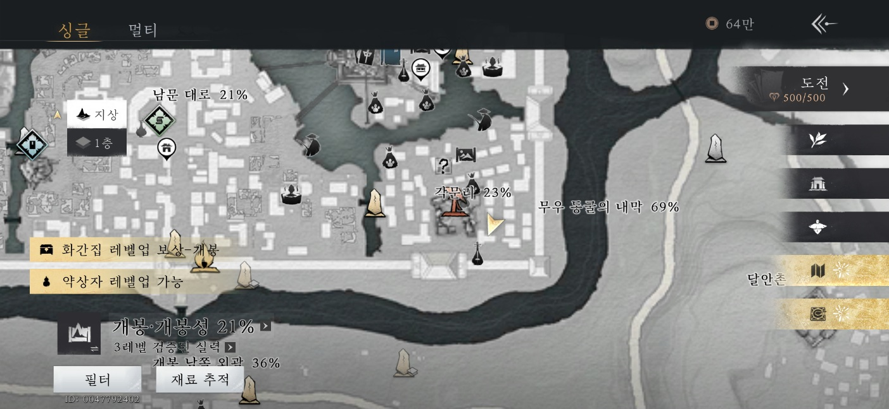
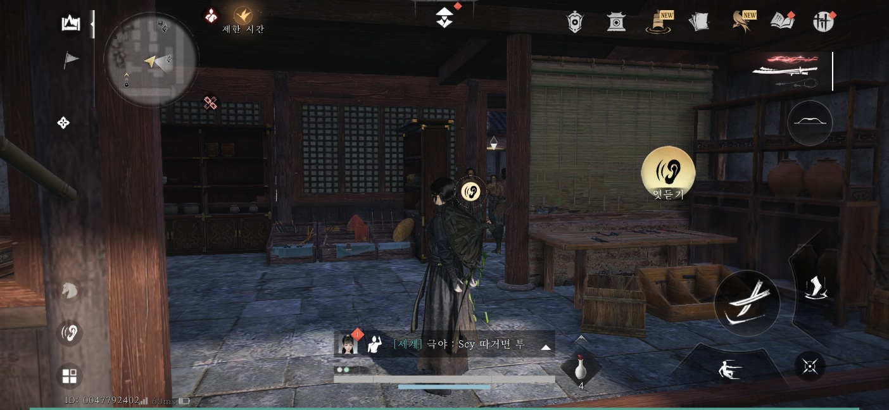
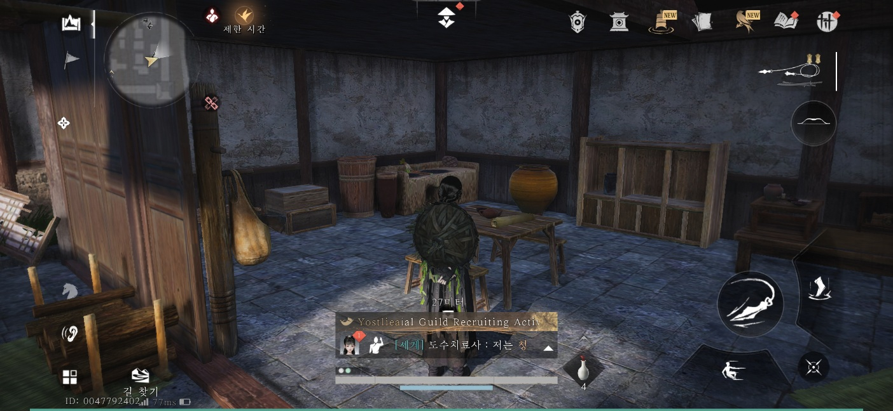
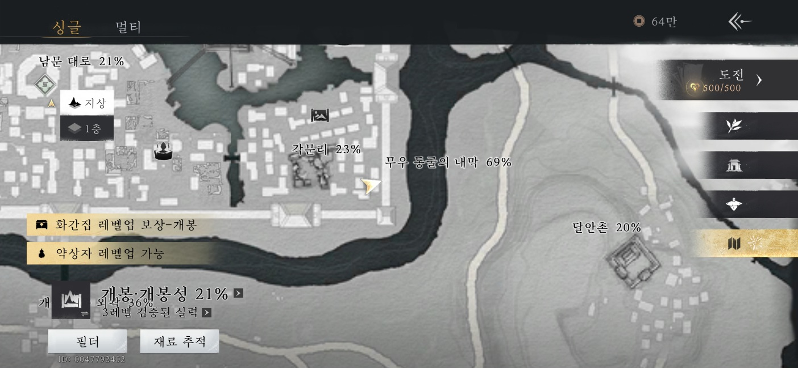
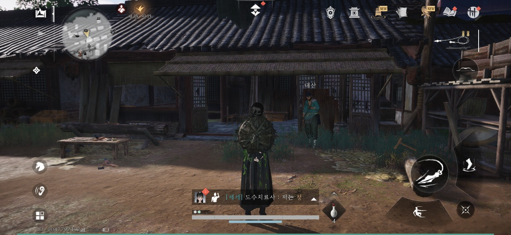
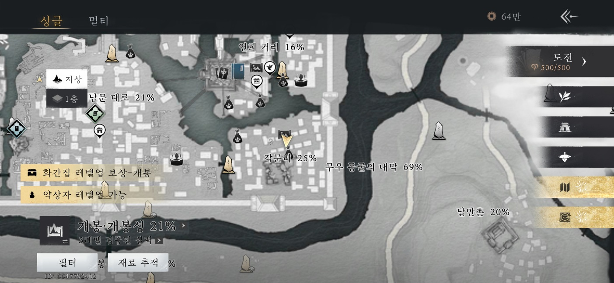

만사록
창창한 앞날
무우방 단원에게 폭행당하는 대산 도와주기
📜 퀘스트 개요
무우방 단원들에게 괴롭힘을 당하는 대산을 구해주고, 그들의 음모가 담긴 문서를 확보하는 의뢰입니다.
대산 구출 및 대화
아래 위치로 이동하면 무우방 단원에게 폭행당하고 있는 대산을 발견할 수 있습니다.
단원들을 처치하여 대산을 구해주세요.
⚠️ 중요: 전투가 끝난 후, 반드시 대산에게 말을 걸어 대화를 완료해야 다음 단계가 진행됩니다.


대화 엿듣기
구출 장소 바로 뒤쪽에 있는 건물로 이동하세요.
그곳에서 무우방 직원들이 나누는 대화를 엿듣기 해야 합니다.

문서 확보
엿듣기를 마친 후 해당 건물의 뒤편으로 넘어가세요.
정면에 보이는 건물 탁자 위에 놓인 문서를 획득해야 합니다.


문서 전달 및 완료
마지막으로 아래 장소에 있는 대산에게 확보한 문서를 전달하세요.


문서를 전달하면 퀘스트는 완료됩니다.